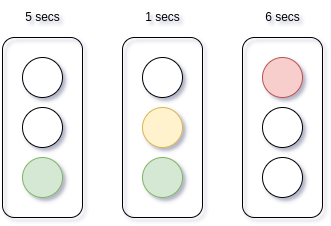
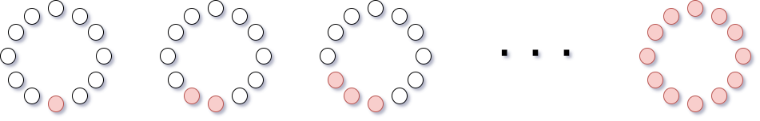
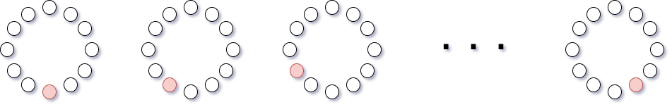
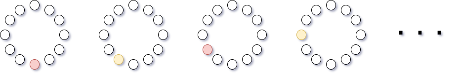

1 - SEMAFORO
Creare un semaforo (usando i led 0, 1 e 2 a cui vengono assegnati rispettivamente i colori pybox.color.GREEN, pybox.color.YELLOW, pybox.color.RED) che si trova nei seguenti stati successivi:
- verde per 5 secondi
- giallo per 1 secondo
- rosso per 6 secondi
Quando il semaforo è giallo, il verde resta acceso. Quando diventa rosso, il verde e il giallo si spengono.

Eseguire la sequenza dei 3 stati continuamente
2 - DUE SEMAFORI
Creare due semafori (uno usando i led 0, 1, 2 e l'altro con i led 6, 7, 8), che gestiscano un incrocio.
- Che succede al semaforo 2 quando il semaforo 1 è giallo?
- Individuare gli stati del sistema, quanti sono?
- Creare il sistema usando le stesse durate dell'esercizio precedente
3 - CERCHIO GRADUALE
- Utilizzare il rosso, colore di default
- Illuminare l'intero anello, un led alla volta, finché non sia completamente luminoso.
- Fra un illuminazione e l'altra passi mezzo secondo
- Una volta che il cerchio è completamente illuminato, terminare l'esecuzione

4 - PASSAGGIO DI LUCE
- Utilizzare il rosso, colore di default
- Illuminare un led alla volta, in modo che la luce passi da uno all'altro, sequenzialmente. Non ci saranno mai due led accesi contemporaneamente.
- Quando si illumina l'ultimo led, ricominciare il ciclo, e così via, indefinitamente.

5 - PASSAGGIO DI LUCE A COLORI INTERMITTENTI
Eseguire l'esercizio precedente, con la seguente variazione:
- accendere un led rosso quando il led attivo è in posizione pari (
0,2,4, ...), giallo quando dispari (1,3,5, ...)
